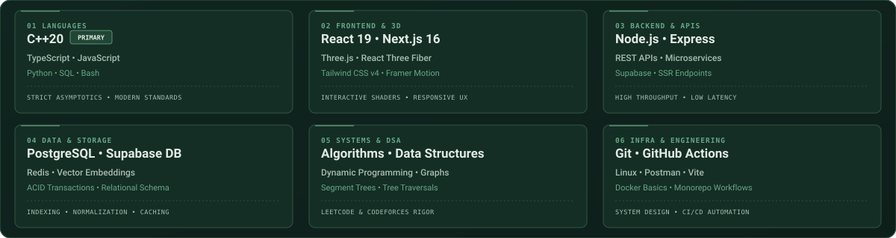
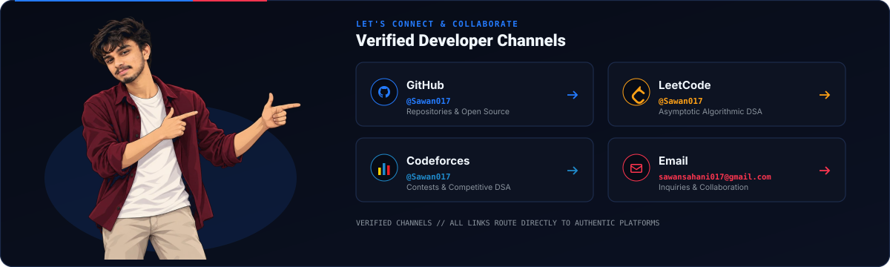
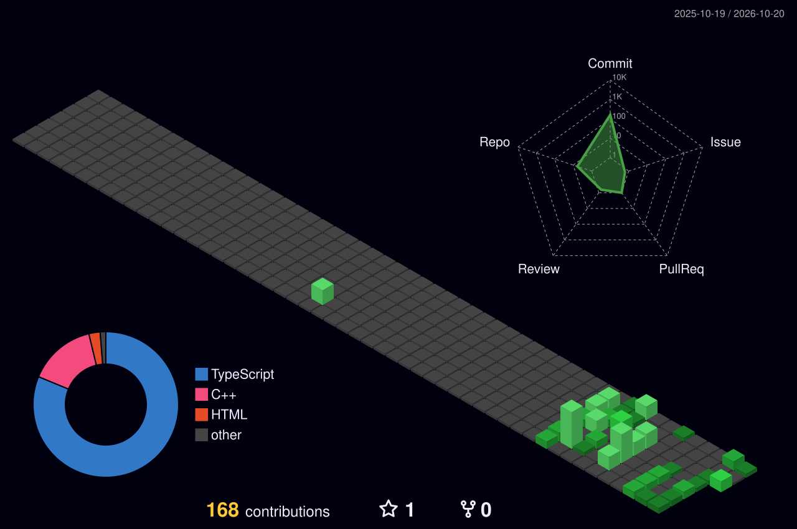

⚡ About Me

Hello! I'm Sawan Sahani, a Computer Science & Engineering undergraduate focused on architecting resilient full-stack web platforms, interactive 3D ecosystems, and mastering asymptotic algorithmic problem-solving.
🔭 Current Engineering FocusBuilding modular full-stack web platforms with reactive state trees, strict TypeScript typing contracts, and scalable cloud persistence using Next.js App Router, TypeScript, and Supabase. |
🌱 Active Technical ExplorationExploring interactive 3D web environments via Three.js and React Three Fiber, distributed cloud database architectures, and type-level metaprogramming. |
⚔️ Algorithmic RigorDedicated competitive programmer and computer science practitioner solving challenges on LeetCode and Codeforces in C++20 with optimal runtime and space complexity. |
💡 Systems PhilosophyPrioritizing clean separation of concerns, defensive database security with Row Level Security (RLS), comprehensive static analysis, and understated, intentional user experiences. |
🪪 Verified Developer Credential

Credential Verification: Active Contributor • GitHub Identity @Sawan017 • CSE Department
🛠️ Technology Stack & Systems
A structured taxonomy of languages, frameworks, and developer tooling actively utilized across my systems:

📂 Featured Projects
Flagship applications, AI evaluation platforms, and algorithmic repositories:


👑 ARINOVA — Gamified Developer Career RPG
Stack: React 19 • TypeScript • Three.js / R3F • Supabase • Monaco Editor • Framer Motion |

🧠 SourCa — AI Placement & Assessment Engine
Stack: Next.js 16 • TypeScript • Google GenAI • Supabase SSR • Monaco • Tailwind CSS v4 |

🚀 CodeAscend — Skill & Progression Tracker
Stack: TypeScript • React • Supabase • Tailwind CSS • RESTful APIs |

⚔️ Algorithmic Solutions & Competitive Programming
Stack: C++20 • Data Structures • Algorithms • Optimization • LeetCode • Codeforces |
🧭 Developer Journey & Horizons
My progression path bridging undergraduate computer science fundamentals with production software engineering:
|
🏛️ 1. Academic Core Rigorous foundational studies in Operating Systems, Database Management Systems, Computer Networks, and Discrete Mathematics. |
⚔️ 2. Algorithmic Rigor Continuous problem-solving and contest participation in C++20 on LeetCode and Codeforces, focusing on asymptotic complexity. |
🚀 3. Flagship Platforms Engineering full-stack architectures (ARINOVA & SourCa) with Next.js 16, React 19, Three.js, and Supabase cloud persistence. |
🌟 4. Long-Term Horizon Designing scalable distributed architectures, developer tooling, and high-performance interactive interfaces. |
📈 GitHub Statistics & Activity
🐍 Contribution Velocity

🌐 Isometric Contribution Landscape

📫 Connect & Collaborate
I am always open to discussing full-stack engineering opportunities, scalable system architectures, interactive applications, and algorithmic challenges.